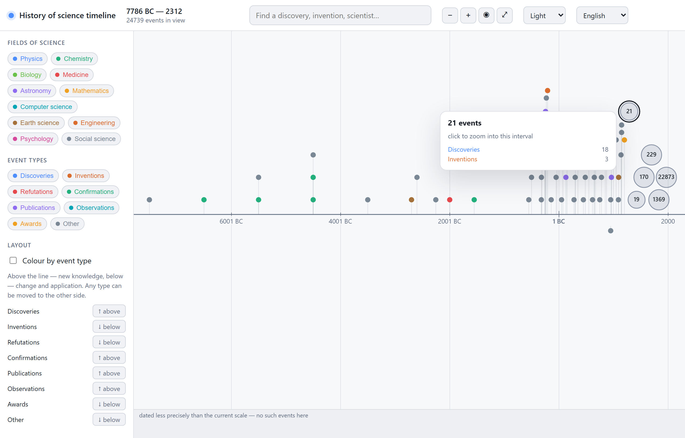
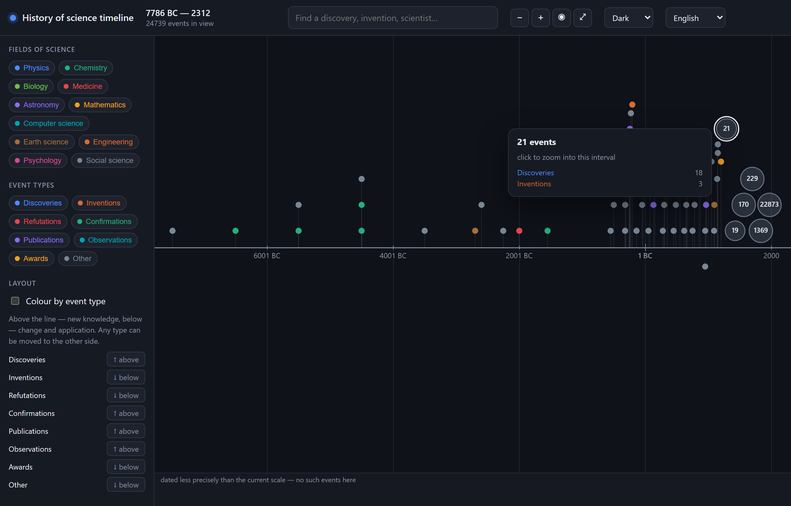
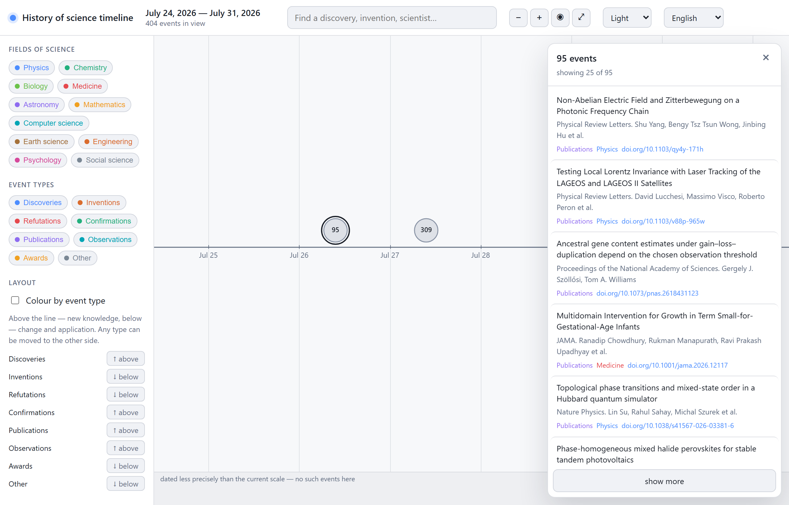
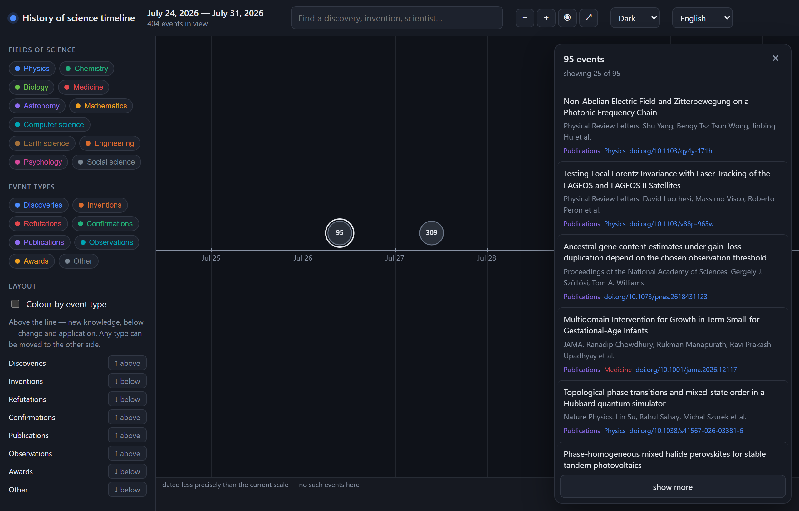
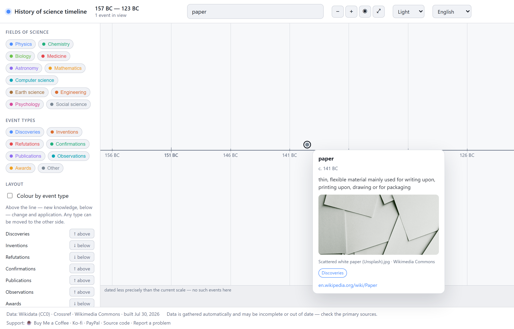
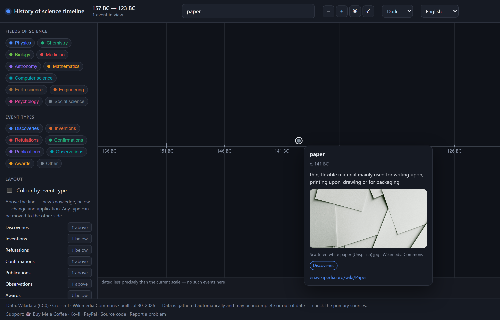

What it looks like






What it does
-
One continuous zoom
Millennia, centuries, decades, years, months, days — the same gesture all the way down. It opens on the current week, because that's where you already are.
-
Two sides of the line
New knowledge above, change and application below. The split is a default, not a rule — any event type can be moved to the other side.
-
Vague dates stay vague
“Around 300 BC” is stored as a century-wide interval, never as an invented 1 January. Zoom past what a date actually knows and it drops to its own row as a bar.
-
This week, not last decade
Wikidata had twelve events for all of 2025 — it learns about a discovery years late. Crossref fills the gap from twenty leading journals, so the line reaches today.
-
Clusters that admit defeat
Zoomed out, events merge into a circle with a count. When 295 papers share one publication date, no amount of zooming separates them — so the circle opens a list instead.
-
Ten interface languages
Including Arabic with full RTL. Dates are assembled in the browser, so “3rd millennium BC” reads correctly whether the language puts the era before the number or after.
Where the data comes from
Two sources with opposite strengths. Wikidata (CC0) knows the history — discoveries, inventions, chemical elements, Nobel prizes, all the way back to copper in the seventh millennium BC. Crossref knows the present: papers from Nature, Science, Cell, PNAS, The Lancet, NEJM, Physical Review Letters and a dozen more, filtered by journal because there is no free signal for how important a paper published yesterday will turn out to be.
It's a static site — the whole dataset ships as JSON and everything, including search and clustering, runs in your browser. No account, no tracking, no backend. A weekly job rebuilds the data from both sources.
Worth knowing: astronomical objects pass a much higher significance bar than everything else. Wikidata holds 34,000 asteroids with exact discovery dates against a couple of thousand genuine science events, and without that filter the history of science becomes a minor-planet catalogue. Pluto, Halley's Comet and Ceres stay; “1998 QE2” does not.
Recent papers carry an assigned weight rather than a measured one — citations take years to appear. Treat the ranking of the last few months as a guess, and check the primary source before citing anything.
Running it yourself
The site is the web/ folder of the repository and needs nothing but
a static host. Rebuilding the data needs .NET 10 and PostgreSQL: the importer
pulls from Wikidata and Crossref, and a second command exports the database into
the JSON the site reads.
The interesting part is src/ScienceTimeline.Core — the time axis and
the Wikidata date parser, both covered by tests. Wikidata writes 44 BC as
“-0044” with no year zero, dates before 1582 usually arrive in the Julian
calendar, and coarse dates come through with a month and day of 00. Each of those
quietly corrupts the data if you miss it.